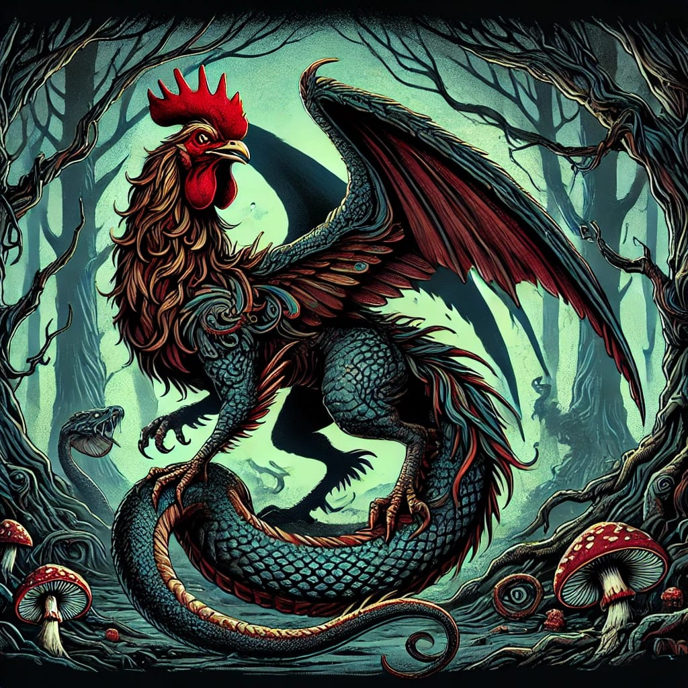

El Basilisco es una criatura legendaria de la tradición chilena, descrita como una mezcla de gallo y serpiente. Según la creencia popular, nace del huevo de un gallo viejo y, al crecer, se convierte en una amenaza para las personas y animales cercanos. Este ser habita en rincones oscuros de las casas, como sótanos o entretechos, y se dice que su aliento o mirada puede drenar la energía vital de sus víctimas, llevándolas a la muerte. Para combatirlo, los habitantes queman la casa donde se oculta el Basilisco o recurren a un curandero que conoce rituales específicos para ahuyentarlo.